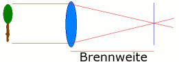

Produktion
Kameraeinstellungen
Die wichtigsten Einstellungen an einer Kamera sind ISO, Blende, Belichtungszeit und Brennweite. Werden diese Werte optimal eingestellt wird das Bild eine gute Qualität haben. Was die einzelnen Einstellungen bewirken wird nun erklärt.ISO
In der analogen Fotografie steht die ISO-Angabe für die Filmempfindlichkeit. Je empfindlicher der Film, desto weniger Licht ist notwendig. Bei den digitalen Kameras steht die ISO-Empfindlichkeit für die Lichtempfindlichkeit des Bildsensors.
Kleine Zahlen sagen also aus, dass der Bildsensor wenig lichtempfindlich ist. Und je größer die ISO-Zahl, desto empfindlicher wird der Bildsensor. Dadurch werden auch noch Aufnahmen mit sehr wenig vorhandenem Licht möglich. Grundsätzlich muss der ISO Wert immer so tief wie möglich eingestellt werden – im Optimalfall also 50 bis 100. Denn Je höher der ISO Wert, desto wahrscheinlicher ist es, dass das Foto letztendlich körnig wirkt. Die meisten Fotografen nehmen lieber ein etwas körniges und scharfes Bild in Kauf, statt ein zu dunkles und unscharfes Bild. Zudem kann das Rauschen später während der Bildbearbeitung mit einem Grafikprogramm wie Photoshop mit Filtern reduziert werden.
Im Photoshop findet man unter „Filter“ > „Rauschfilter“ die beiden Optionen „Rauschen entfernen“ und „Rauschen reduzieren“. Wählt man Rauschen entfernen, so wird der Effekt sofort angewendet, und man hat keine weitere Einstellmöglichkeit. Dieser Schnelleffekt eignet sich eher bei Bildern mit wenig Details und geringem Rauschen. Bessere Resultate können durch feinere Einstellungen durch die Regler mit dem „Rauschen reduzieren“ erzielt werden.
Es wird klar, dass ein Bildrauschen entsteht.
Blende
Die Blende wird am besten mit dem menschlichen Auge verglichen. Je kleiner die Pupille ist, desto weniger Licht kommt auf die Netzhaut. Zum Beispiel in der Mittagssonne. Bei wenig Licht ist die Pupille sehr gross, somit weit geöffnet und lässt viel Licht hindurch auf die Netzhaut. Dies vor allem in der Nacht, wenn sehr wenig Umgebungslicht vorhanden ist. Die Pupille öffnet sich somit, um so viel Licht wie nur möglich auf die Netzhaut treffen zu lassen. Bei der Blende ist das Prinzip das Gleiche. Je geschlossener die Blende ist, desto weniger Licht trifft auf den Sensor und je offener sie ist, desto mehr Licht kann aufgenommen werden in kürzerer Zeit.
Die kreativste Verwendung der Blende ist die Kontrolle der Schärfentiefe. Obwohl die Kamera immer nur einen Punkt ganz präzise fokussieren kann, ist es möglich einen bestimmten Bereich vor und hinter diesem Punkt ebenfalls scharf abzubilden. Diese Ausdehnung des scharfen Bereichs wird Schärfentiefe genannt und ist von vier verschiedenen Faktoren abhängig. Der wichtigste Faktor ist die Blende. Je kleiner die Blende, desto mehr Bildbereiche werden scharf abgebildet, je grösser die Blende, desto kleiner ist der scharfe Bereich im Bild. Der zweite Faktor ist der Abstand vom Objektiv zum Objekt. Je kleiner dieser ist, desto weniger Schärfentiefe entsteht. Sehr schön zu sehen in der Makrofotografie. Der Dritte Faktor ist die Brennweite. Mit einer langen Brennweite wird eine geringere Schärfentiefe erzielt als mit einem Weitwinkelobjektiv. Der letzte Faktor ist noch das persönliche empfinden.
Ein wenig verwirrend ist die Kamera-Anzeige für die Blende. Wenn die Rede von einer kleinen Blende ist, wird eine grössere, höhere Zahl angezeigt. Demnach genau das Gegenteil. Wird eine grosse Blende gewünscht, um nur eine kleine Schärfentiefe zu erzeugen, wird eine kleine Zahl angezeigt.
Belichtungszeit
Je nachdem, was für ein Motiv man hat, kann die Voreinstellung der Belichtungszeit bevorzugt werden. Möchte man schnelle Bewegungen auf dem Foto „einfrieren“, muss man die Belichtungszeit festlegen. Die Angabe der Belichtungszeit erfolgt in Sekunden. Meistens wird man einen Bruchteil einer Sekunde haben, also mit Belichtungszeiten von 1/60 oder 1/200 Sekunde fotografieren.
Die Belichtungszeit ist für 2 Dinge wichtig:- Die Belichtungszeit regelt, wie lange Licht auf den Bildsensor fällt, und somit, ob ausreichend, zu viel oder zu wenig Licht für eine korrekt belichtete Aufnahme vorhanden ist.
- Je nach Belichtungszeit kann eine Aufnahme aus der Hand scharf oder verwackelt (unscharf) werden. Je länger die Belichtungszeit, umso größer die Gefahr.
Brennweite
Als Brennweite wird die Strecke bezeichnet, auf der parallele Strahlen – zum Beispiel von einem Baum – hinter der Lifnse zu einem Punkt gebündelt werden. Je grösser die Brennweite eines Objektivs ist, desto weiter entfernt können Sie von einem Sujet stehen, um es formatfüllend auf den Sensor zu bannen. Je kleiner die Brennweite ist, desto näher können Sie an ein Objektiv herangehen.
Um weiter Informationen zum Fotografieren kann folgende Webseite besucht werden: Foto-Kurs
Filmen
Vor dem Dreh ist nach dem Dreh
Eine der wichtigsten Regeln, die man in der Filmproduktion kennt ist:"Vor dem Dreh ist nach dem Dreh". Die Aussage mag anfangs ein wenig unlogisch klingen, ist aber sehr wichtig.
Folgende 3 Schritte sollten immer eingehalten werden, denn so ist man jederzeit bereit wieder drehen zu gehen.- Der Akku der Kamera sollte sofort angeschlossen werden, um den Akku zu laden.
- Alle Daten müssen importiert werden und ein redundantes Backup sollte erstellt werden, im Fall das die Daten gelöscht werden.